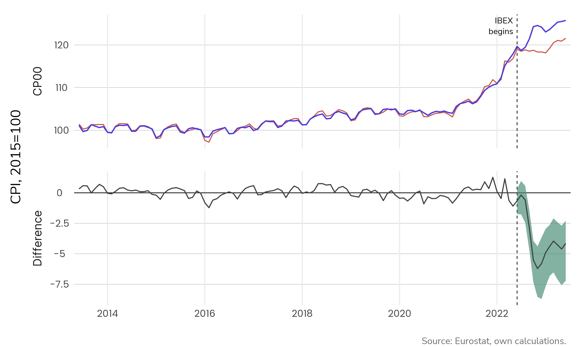

The effects of the Iberian exception on inflation:
A synthetic-controls approach
Average wholesale electricity prices in the EU
the energy crisis
The Iberian exception
The IBerian EXception (IBEX)
- Sets limit to the price of gas-powered electricity
- Adjustment mechanism covers for potential loses
- Paid by consumers + exports to France
The exception of Iberia
- Tax reductions
- Direct transfers
- Retail market regulation
Experimental setup
- While the Iberian market operates under new rules,
- Other EU countries continue to follow directives
Methods and Data
Methodology
- DAP: Day-ahead price of electricity
- NRG: Energy-only Consumer Price Index (CPI)
- xNRG: Non-energy CPI
- CP00: All-items CPI
Software
Results
Observed and synthetic all-items CPI series for Spain
Observed and synthetic all-items CPI series for Spain
Average Treatment Effect: Spain and Portugal
90% confidence intervals
Discussion
What explains the difference?
- PVPC is indexed by day-ahead price
- Serves ~40% of households and firms
- Direct link between DAP and NRG
- Retailers favor longer-term contracts
- Slower link between DAP and NRG
The IBEX is responsible for...
- -19 pts in energy inflation
- -3.5 pts in overall inflation
- -12 pts in energy inflation in 2023
- No effect on overall inflation
Energy-only inflation in Spain and Portugal
The IBEX: An effective policy which highlights the limitations of the PVPC
Miguel Haro Ruiz
m.haroruiz@gmail.com
theprior.xyz
References
- Abadie, A., 2021. Using synthetic controls: Feasibility, data requirements, and methodological aspects. Journal of Economic Literature 59, 391–425. DOI: doi.org/10.1257/jel.20191450
- Barchart. (2022). Dutch TTF gas jan ’23 (tgf23). URL: barchart.com/futures/quotes/TGJ23/overview
- Energy-Charts. (2022). Welcome to the Energy-Charts. URL: energy-charts.info/
- Eurostat. (2023). HICP at constant tax rates - monthly data (index). URL: ec.europa.eu/eurostat/web/products-datasets/-/prc_hicp_cind
- OMIE. (2022). Day-ahead hourly price. URL: omie.es/en/market-results/daily/daily-market/daily-hourly-price